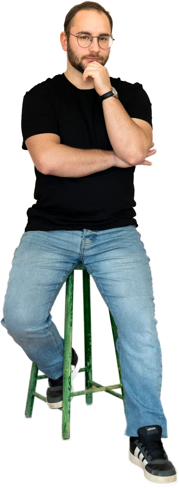

Jó reggelt mindenkinek!
10 000 követő · 40 kedvelésSocialStream, interest media ügynökség. A social media meghalt. Az érdeklődés vette át a helyét.


Marketing az érdeklődés korában
Mi ebben a korban győzünk.
Egy korszak véget ért: a feed már nem azt mutatja, kit követsz, hanem azt, ami valóban érdekel. Videó tartalom, social jelenlét és performance hirdetések egy growth rendszerben.
A régi kor posztol és reménykedik.
A legtöbb vállalkozás még a régi kor szabályaival játszik. Vidd a lencsét a feed fölé: alatta az látszik, amit mi készítünk, a tartalom, amit az új kor jutalmaz.


Vidd a kurzort a feed fölé.
A régi kor
Posztolni és reménykedni: ez volt a régi kor stratégiája.
Az új kor III. törvénye
Aki a régi szabályokkal játszik, veszít.
Az új kor stratégiája: adatból tudni, mi érdekli az embereket, és rendszert építeni, ami az érdeklődést bevétellé alakítja.
9
8
7
6
5
4
3
2
1
Nem ígéretek. Számok.
81×
ROAS, a legjobb eredményünk e-commerce kampányban
Ajtó webshop, Google Performance Max
79M Ft
bevétel egy hét alatt, B2B Meta kampányból
Csarnoképítő ügyfél
23×
ROAS ünnepi kampányban, 8M+ Ft bevétel
Karóra webshop
105Ft
jelentkezőnként: ~5700 jelentkező 600K Ft költésből
Egészségügyi webinár
300M+ Ft kezelt büdzsé 2022 óta.
A piacod már az új korban jár. A marketinged is?
30 perces ingyenes audit: megnézzük a kampányaidat, a landing page-edet és az ajánlatodat, és őszintén megmondjuk, hol játszol még a régi kor szabályaival, még fizetés előtt. Havonta legfeljebb két új partner.
Kérem az ingyenes auditot
hello@socialstream.hu